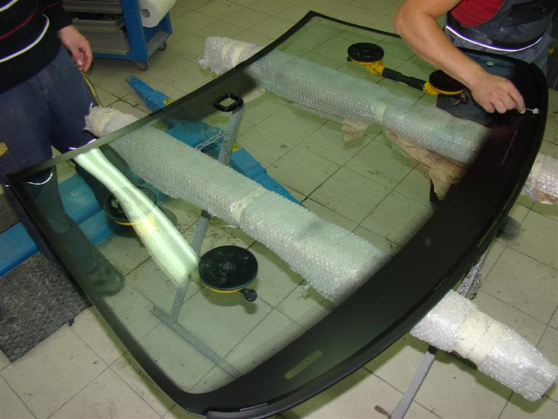
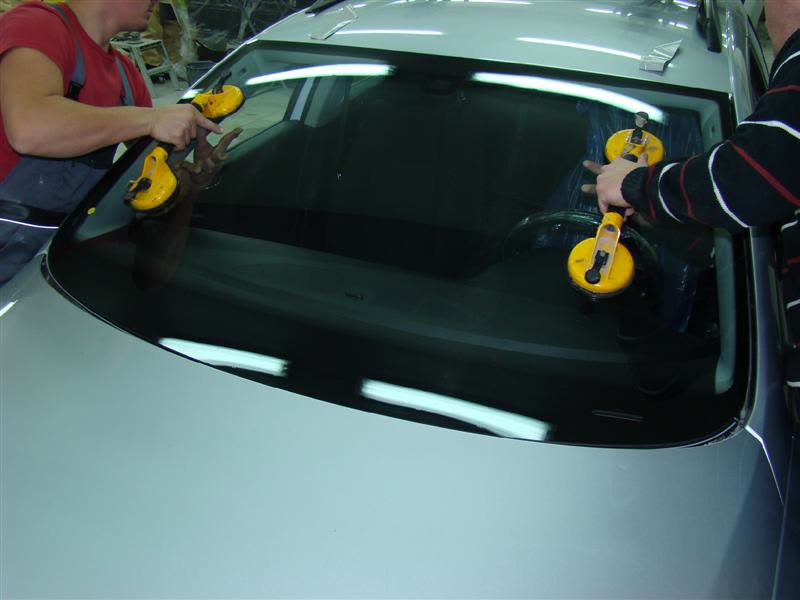
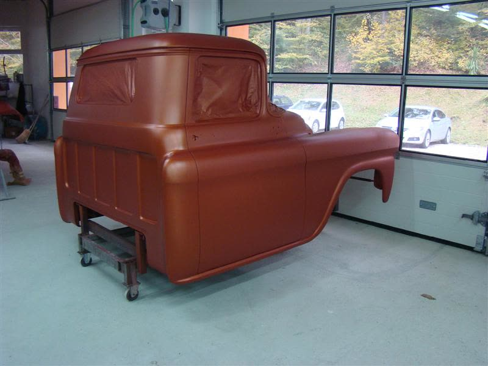

01
Avtokleparstvo
Kleparska dela opravljamo na ravnalni mizi vrhunske znamke Spanesi. Poškodovano vozilo bomo kar se da temeljito popravili.
Kleparska dela na ravnalni mizi Spanesi, lakiranje v komori USI-Italia z vodnimi laki DuPont. Smo pogodbeni izvajalec za večino znanih zavarovalnic: prijavo in cenitev škode iz kaska opravimo pri nas.
 Naša delavnica
Naša delavnica
Vse za poškodovano vozilo na enem naslovu. Če je potrebno, vam ob popravilu zagotovimo nadomestno vozilo.
Kleparska dela opravljamo na ravnalni mizi vrhunske znamke Spanesi. Poškodovano vozilo bomo kar se da temeljito popravili.

Lakiranje v lakirni komori USI-Italia z vodnimi laki DuPont. Osebna, dostavna in tovorna vozila.

Prijave in cenitve škod iz naslova avtomobilskega kaska. Za ostale zavarovalnice pripravimo dokumentacijo, po dogovoru vozilo peljemo tudi na cenilno mesto.
Ob zahtevnejših okvarah in nezgodah vozilo pripeljemo do naše delavnice ali po vaši izbiri, s svojim vozilom in ustrezno opremljeno prikolico.

Steklo je sestavni del trdnosti vozila. Zamenjamo ga z originalnim delom oziroma z enakovrednim steklom.
Polnjenje klimatskih naprav v delavnici. Mobilno vodno peskanje na terenu: ekološko in brezprašno odstranjevanje barv, lakov, lepil in rje.
V sodobno opremljeni delavnici bomo vaše poškodovano vozilo kar se da temeljito popravili.



Kabina starodobnega tovornjaka: v temeljni barvi in po lakiranju. Fotografiji iz naše delavnice.


Po osnovni šoli se je najprej izučil za orodjarja, ker so ga veselila dela z rokami. Ker v tej smeri ni bilo zaposlitve in je avtomobile popravljal že v srednji šoli, je z dodatnimi izpiti pridobil izobrazbo avtoličarja. V začetku leta 1999 je krenil na pot samostojnega podjetnika.
Dobro opravljeno delo je najboljša reklama za našo dejavnost.
Po navedbah na njihovi strani je bilo v delavnici zaposlenih šest ljudi: poleg Marka kot strokovnega vodje in nosilca obrti še dva avtoličarja, pomočnik avtoličarja, klepar in tajnica. Prosti čas je prav tako povezan z avtomobili: Marko se ljubiteljsko udeležuje tekmovanj državnega prvenstva v spretnostnih vožnjah na terenu.

Ustavite vozilo, zavarujte in označite kraj, vozilo umaknite z vozišča, če je vozno. Policije ni treba obvestiti. Izmenjajte podatke in izpolnite Evropsko poročilo o prometni nesreči.
Za brisalcem pustite svoje podatke. Dogodek lahko prijavite na policijski postaji, da se zavarujete pred prijavo pobega s kraja nesreče.
Trikotnik vsaj 50 metrov od kraja nesreče, presodite stanje poškodovancev, pokličite 113.
Vozilo pripeljemo s svojim vozilom in prikolico, cenitev opravimo v delavnici.